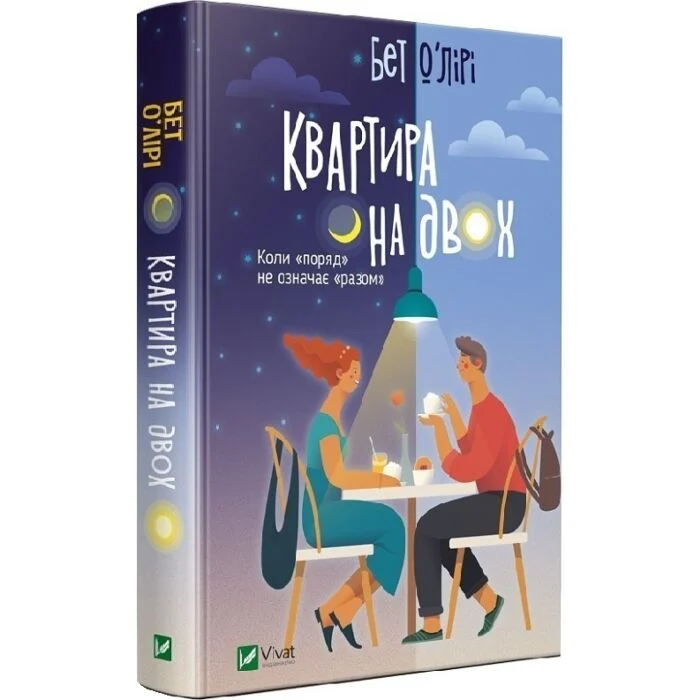

472 грн
Автор: Ніккі Сент-Кроу
Видавництво: Book Chef
Перекладач: Анастасія Плахотня
Рік видання: 2024
Мова: Українська
Кількість сторінок: 224
Обкладинка: Тверда
Вага: 0.256
Формат: 133x205x17мм
Тип: Паперова книга
Серія книг Розпусні загублені хлопці
Наявність ілюстрацій Ні
Протягом двох століть усі жінки роду Дарлінґ зникали у свій 18-й день народження. Іноді вони зникали лише на день, іноді на тиждень чи місяць. Але вони завжди поверталися зломленими і навіть божевільними. На що готовий піти Пітер Пен, аби отримати бажане? Чи готова Вінні Дарлінґ допомогти Загубленим хлопцям врятувати острів? Хоч «Король Неверленду» і черпає натхнення з роману «Пітер Пен і Венді», та ця книга створена виключно для дорослої аудиторії. Історія занурить вас у світ романтично-еротичних пригод з харизматичними та безкомпромісними героями. Ви зіткнетеся з палкими почуттями, напруженими конфліктами та бурхливими емоціями, що створюють неповторну атмосферу твору. Приготуйтесь до першої пригоди з історії, яка змінить ваше уявлення про казки назавжди.